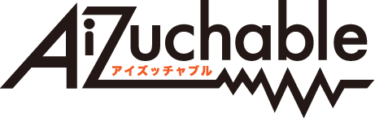

Aizuchable
UXデザイン プロダクトデザイン
課題設定
「コミュニケーションのためのプロダクト」
制作期間
１ヶ月（授業課題）/ 2020
使用したソフトウェア
Visual Studio Code (JavaScript) / Arduino / Photoshop / Illustrator / Premiere Pro


相槌が伝わらない
チャットなどのオンライン上のコミュニケーションでは、相槌は伝りません。
相槌を打つ側は普段、顔や動作に自然とでているものが文字にして打たなければ伝わらないという手間がかかり、話し手側は自分の話がきちんと伝わっているのか不安になります。

作品説明
相槌を打つ側のインカメラで顔の表情を認識し、話し手側に振動にして伝えるというシステムとプロダクトを作りました。
まず、顔認識のjsライブラリを使い、うなずく動作や首を傾げた時、笑った表情や、話が難しくて顔をしかめた時など、合計７種類の相槌を検出するプログラムを書きました。

① 軽いうなずき

② 大きなうなずき

③ 疑問に感じたとき

④ 笑ったとき

⑤ 退屈なとき

⑥ しかめ面なとき

⑦ 驚いたとき
そして認識した結果をNode.jsを使い話し手側のパソコンへ送ります。

話し手側のパソコンで検出結果をArduinoを用いて振動にして伝えました。目障り、耳障りにならない触覚的なアプローチ、つまり振動にすることで話をしながら自然と相槌の振動は受け取れる形にしました。


プログラミング（人生３回目）・プロダクト・ムービー制作。根性でやり切りました
プレゼン動画
リンクをはるか貼らないか。